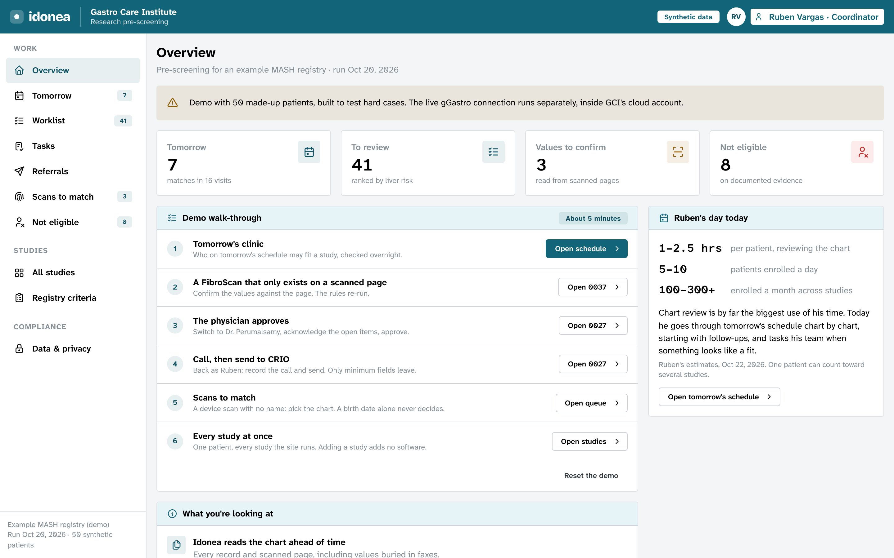

Know who qualifies before the screening visit.
Idonea reads a practice's whole record, checks every patient against each trial's criteria, and builds a ranked list for the research coordinator, with the evidence behind every answer. Fixed rules check the criteria, AI only reads documents, and people confirm every value and make every decision.
- AdultMetBorn 1968, patient record
- Fatty liver disease on recordMetCoded K76.0 in 2024, active
- Liver stiffness by FibroScanMet11.8 kPa on Mar 3, 2026, from the device export
- Liver fat by MRI-PDFFUnknownNot on record. Would settle it: an MRI-PDFF, or an outside report of one.
- No other cause of liver diseaseConfirmA 2019 hepatitis B result appears only on a faxed page. A coordinator checks the page.
- No heavy drinkingMet“One or two drinks a week,” visit note, Jun 2026
A coordinator's day goes to charts, and most of them end in a no.
Trials for liver disease such as MASH need specific test results, and many patients who reach a screening visit fail it. Before that visit, a coordinator works through each chart by hand: coded diagnoses, lab panels, scanned faxes, outside reports, visit notes. One coordinator we work with estimates more than an hour per patient.
Idonea does that first pass for the whole practice and shows its work. The coordinator starts from a list ranked by evidence, with documented exclusions already set aside, sees exactly what is missing, and spends their time on the calls and visits that lead to enrollment.
How it works
Each step has one job, and each step knows what it is not allowed to decide.
-
Pull the whole record
A read-only export from the EHR's certified FHIR interface, into the practice's own cloud account. Every record is kept exactly as it arrived, so each answer traces back to its source.
Structured data -
Check every patient against every study
Each criterion is written once as an HL7 CQL rule, with its cutoffs in settings. Every answer is met, not met, unknown or confirm, with the record it rests on. No AI in this step.
Fixed rules -
Read the charts that matter
For patients on the reading list, an AI model reads faxes, outside labs, imaging reports and notes for what the codes miss. Typed pages go as text, scans as images, and each document is read once.
AI reads, nothing more -
People confirm and decide
A coordinator checks each value against its page before it counts. Then the physician approves, the coordinator calls the patient, and the referral goes to the site's trial system. These last steps are in the demo today, not yet in use at a site.
Coordinator and physician
The rules it holds to
- Unknown is never a no
- Missing data stays unknown, along with what would settle it. A criterion is marked not met only on documented evidence.
- Rules check criteria, AI only reads
- Criteria are fixed logic, so the same chart on the same date always gets the same answer. AI finds values in documents; it never decides who qualifies.
- A person confirms what AI reads
- Every value read from a document waits for a coordinator, until a locked test on real charts shows the reader meets the bar.
- A birth date alone never links a record
- A device result joins a chart only with a second fact from that chart. Anything less goes to a matching queue, and a person decides.
- It runs in the practice's own account
- Idonea runs in the practice's own cloud account, under the practice's business associate agreement. The AI service works under one too and does not train on the data. Sponsors will see counts only.
- A new study is a package, not new code
- Settings, rules and made-up test patients. A check refuses an incomplete study before it runs on anyone.
Where things stand
Idonea is installed at its first site: a gastroenterology practice and its clinical research team. This is the record so far.
- October 2026
The rules engine, the review app and a library of made-up test patients covering every edge of every criterion, all on made-up data.
- Late October 2026
Business associate agreement in place for AI reading of chart documents.
- November 2026
The practice's own cloud account on AWS, under its own business associate agreement, with a private server and storage for the records.
First whole-practice pull from the EHR, read-only: about 160,000 patients and 5.7 million records.
First rules run across the whole practice, in about two and a half hours. FibroScan device results linked to their charts by a second fact, with the rest sent to a matching queue. About 2,900 patients have a FibroScan on record or fatty liver coded; their charts are the ones worth reading.
The coordinator demo, on made-up patients: confirming values, the physician's approval, the call and the referral. It is not yet in use at the site. Studies became packages of rules, settings and test patients, checked before they run.
- Next
A signed-in page so the practice's staff can open their worklist. Measure the chart reader against coordinators on a locked set of real charts. The site's first trial on Idonea opens to patients in early 2027. Then more studies, and more sites.
Walk through a coordinator's day
The demo runs on 50 made-up patients built to test hard cases. A built-in guide takes about five minutes.
- Tomorrow's clinic, with possible matches flagged
- A FibroScan result found only on a scanned page
- The physician's approval, the call and the referral
- Matching a device scan that has no name
- One patient against every study at once

Every patient in the demo is made up. No real patient data is on this site.